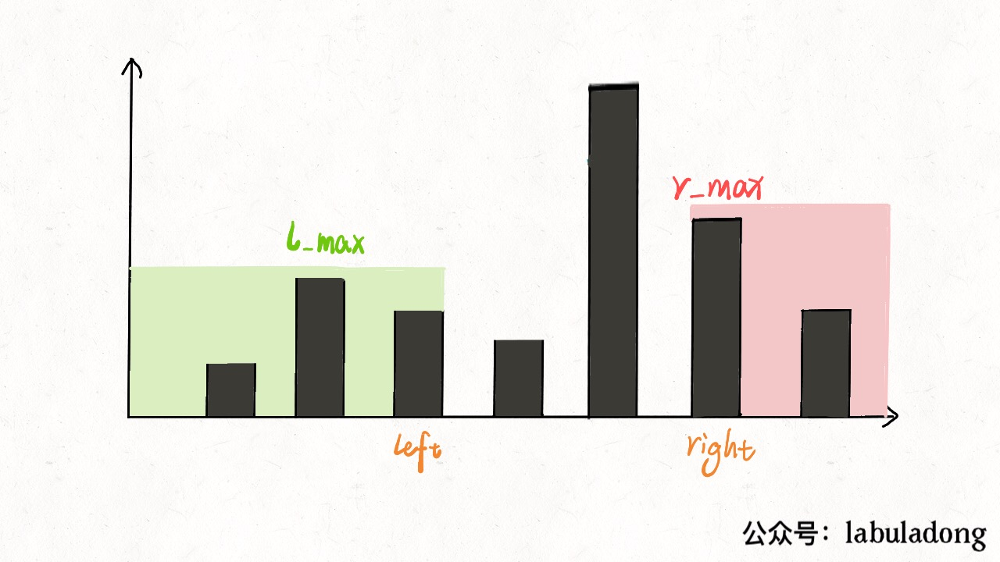
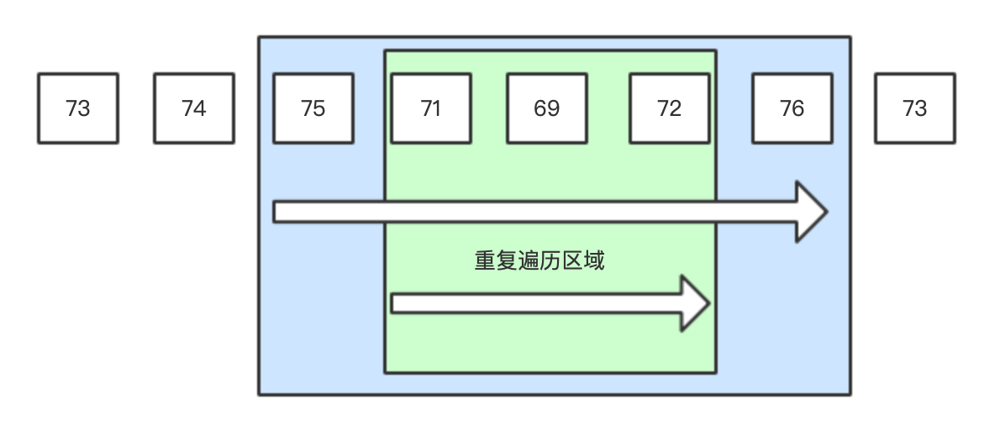
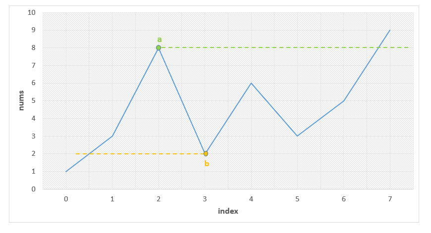
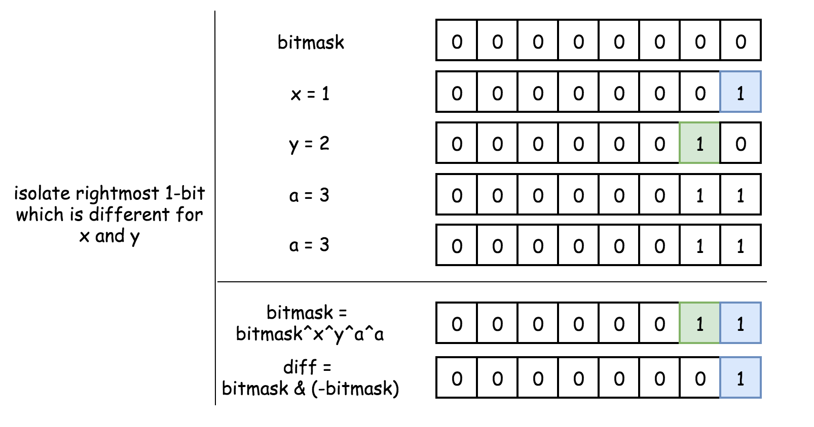
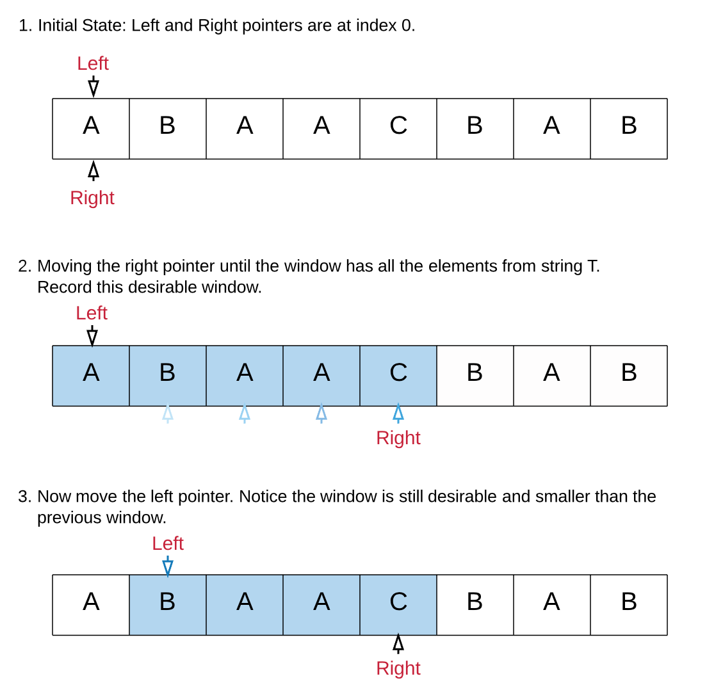
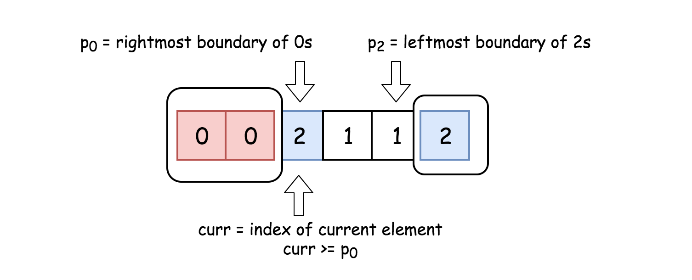
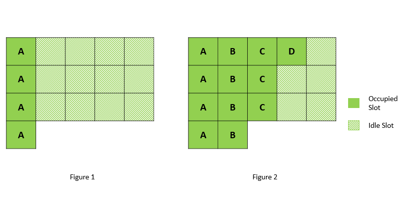

动态规划
LeetCode-72-编辑距离
题目
给定两个单词 word1 和 word2，计算出将 word1 转换成 word2 所使用的最少操作数 。
你可以对一个单词进行如下三种操作：
插入一个字符
删除一个字符
替换一个字符
示例 1:
输入: word1 = "horse", word2 = "ros"
输出: 3
解释:
horse -> rorse (将 'h' 替换为 'r')
rorse -> rose (删除 'r')
rose -> ros (删除 'e')示例 2:
输入: word1 = "intention", word2 = "execution"
输出: 5
解释:
intention -> inention (删除 't')
inention -> enention (将 'i' 替换为 'e')
enention -> exention (将 'n' 替换为 'x')
exention -> exection (将 'n' 替换为 'c')
exection -> execution (插入 'u')来源：力扣（LeetCode）
链接：https://leetcode-cn.com/problems/edit-distance
著作权归领扣网络所有。商业转载请联系官方授权，非商业转载请注明出处。
思路
编辑距离（Minimum Edit Distance，MED）是用来衡量两个字符串相似度的常用方法， 求两个字符串的编辑距离也算是一个经典问题了。
我们的两个字符串$A$,$B$分别代表了当前的字符串和目标字符串，实际上，将$A$变成$B$和将$B$变成$A$所需要的步数是一样的（逆过程），因此所需要的最小步数才可以用距离这个概念来表示。
如果有一个字符串是空串，那么显然可以只用另一个字符串的长度来表示，即：
$$
Dis(A,B)=max(len(A),len(B)), if(len(A)==0 || len(B)==0)
$$
此外，距离可以从上一步的最优结果推到而来，这就是编辑距离的动态规划解法，注意到我们的三种情况其实就对应了三种允许的操作。看起来删除和插入操作好像是对称的，其实并没有本质的区别，只是因为我们的目标字符串是$B$：
$$
Dis(A_i,B_j)=min(Dis(A_{i-1},B_j)+1,Dis(A_i,B_{j-1})+1,Dis(A_{i-1},B_{j-1})+(A_i==B_j))
$$
三个操作分别表示
删除字符$A_i$，因为$Dis(A_{i-1},B_j)$已经满足成为字符串$B_{1:j}$的条件
插入字符$B_j$
相等不操作，不相等则将字符$A_i$替换为$B_j$
实际上在最后一个字母相等的情况下，肯定是直接等于左上角的结果最小，不需要再额外判断了。
代码
class Solution {
public int minDistance(String word1, String word2) {
int len1=word1.length(),len2=word2.length();
if(word1.isEmpty() || word2.isEmpty()) return Math.max(len1,len2);
int [][]dis=new int[len1+1][len2+1];
for(int i=0;i<=len1;i++) dis[i][0]=i;
for(int j=0;j<=len2;j++) dis[0][j]=j;
for(int i=1;i<=len1;i++)
for(int j=1;j<=len2;j++){
if(word1.charAt(i-1)==word2.charAt(j-1))
dis[i][j]=dis[i-1][j-1];
else dis[i][j]=Math.min(dis[i-1][j-1]+1,Math.min(dis[i-1][j]+1,dis[i][j-1]+1));
}
return dis[len1][len2];
}
}优化空间：这里我们使用的只有两行结果，因此可以使用滚动数组进行优化（或者使用一个变量保存左上角的数，优化成一维），不过对这道题目的数据而言意义不大hhh：
class Solution {
public int minDistance(String word1, String word2) {
int len1=word1.length(),len2=word2.length();
if(word1.isEmpty() || word2.isEmpty()) return Math.max(len1,len2);
/*
if(len1>len2){
String tmp=word2;
word2=word1;
word1=tmp;
len1=word1.length();
len2=word2.length();
}
*/
int [][]dis=new int[2][len2+1];
for(int j=0;j<=len2;j++) dis[0][j]=j;
for(int i=1;i<=len1;i++){
int curIndex=i&1,lastIndex=1-curIndex;
dis[curIndex][0]=i;
for(int j=1;j<=len2;j++){
if(word1.charAt(i-1)==word2.charAt(j-1))
dis[curIndex][j]=dis[lastIndex][j-1];
else dis[curIndex][j]=Math.min(dis[lastIndex][j-1]+1,Math.min(dis[lastIndex][j]+1,dis[curIndex][j-1]+1));
}
}
return dis[len1 & 1][len2];
}
}LeetCode-377.组合总和 Ⅳ
题意
给定一个由正整数组成且不存在重复数字的数组，找出和为给定目标正整数的组合的个数。请注意，顺序不同的序列被视作不同的组合。
思路
完全背包，不同顺序重复计
代码
class Solution {
public int combinationSum4(int[] nums, int target) {
int []dp=new int[target+1]; //部分会溢出，c++应该用unsigned long long
dp[0]=1; //单个num直接满足
//完全背包
//dp[i]表示数组中能组成和为i的组合数
//注意循环的顺序,不同顺序重复计则在外，不同顺序相同则在内（标准的完全背包）
for(int i=1;i<=target;i++){
for(int j=0;j<nums.length;j++){
if(i-nums[j]>=0){
dp[i]+=dp[i-nums[j]];
}
}
}
return dp[target];
}
}LeetCode-53. 最大子序和
题意
给定一个整数数组 nums ，找到一个具有最大和的连续子数组（子数组最少包含一个元素），返回其最大和。
示例:
输入: [-2,1,-3,4,-1,2,1,-5,4],
输出: 6
解释: 连续子数组 [4,-1,2,1] 的和最大，为 6。
思路
说真的，这题的贪心和动态规划的解法其实是一样的
代码
class Solution {
public:
int maxSubArray(vector<int>& nums) {
assert(nums.size()>0);
int maxs=nums[0],cur=0;
int len=nums.size();
//动态规划
//定义f(k)表示以当前元素结尾的子数组的最大值
//则f(k)=max(num[k],f(k-1)+num[k])
for(int i=0;i<len;i++){
cur+=nums[i];
cur=max(cur,nums[i]); //dp[i]
maxs=max(maxs,cur);
}
return maxs;
}
};LeetCode-70. 爬楼梯
题意
假设你正在爬楼梯。需要 n 阶你才能到达楼顶。
每次你可以爬 1 或 2 个台阶。你有多少种不同的方法可以爬到楼顶呢？
思路
动态规划水题/斐波那契数列
代码
class Solution {
public:
//dp[1]=1 dp[2]=2 dp[n]=dp[n-1]+dp[n-2]
int climbStairs(int n) {
int dp[2]={1,2};
for(int i=2;i<n;i++){
int tmp=dp[0]+dp[1];
dp[0]=dp[1];
dp[1]=tmp;
}
if(n==1) return dp[0];
return dp[1];
}
};LeetCode-62. 不同路径
题意
一个机器人位于一个 m x n 网格的左上角
机器人每次只能向下或者向右移动一步。机器人试图达到网格的右下角
问总共有多少条不同的路径？
思路
动态规划模板题
代码
class Solution {
public int uniquePaths(int m, int n) {
int[][] dp=new int[m][n];
//初始侧边均为1
for(int i=0;i<m;i++) dp[i][0]=1;
for(int i=0;i<n;i++) dp[0][i]=1;
for(int i=1;i<m;i++){
for(int j=1;j<n;j++){
//当前位置方案数等于左边加上面的方案和
dp[i][j]=dp[i-1][j]+dp[i][j-1];
}
}
return dp[m-1][n-1];
}
}
//空间优化
class Solution {
public int uniquePaths(int m, int n) {
int[]dp=new int[n];
//初始侧边均为1
for(int i=0;i<n;i++) dp[i]=1;
for(int i=1;i<m;i++){
for(int j=1;j<n;j++){
//当前位置方案数等于左边加上面的方案和
dp[j]=dp[j-1]+dp[j];
}
}
return dp[n-1];
}
}LeetCode-64. 最小路径和
题意
给定一个包含非负整数的 m x n 网格，请找出一条从左上角到右下角的路径，使得路径上的数字总和为最小。
思路
$$dp[i][j]=min(dp[i-1][j],dp[i][j-1])+W[i][j]$$，可以状态压缩节省空间
代码
class Solution {
public int minPathSum(int[][] grid) {
int n=grid.length;
if(n==0) return 0;
int m=grid[0].length;
int [][]dp=new int[n][m];
dp[0][0]=grid[0][0];
for(int i=1;i<n;i++) dp[i][0]=dp[i-1][0]+grid[i][0];
for(int i=1;i<m;i++) dp[0][i]=dp[0][i-1]+grid[0][i];
for(int i=1;i<n;i++){
for(int j=1;j<m;j++){
dp[i][j]=Math.min(dp[i-1][j],dp[i][j-1])+grid[i][j];
}
}
return dp[n-1][m-1];
}
}
//空间压缩
class Solution {
public int minPathSum(int[][] grid) {
int n=grid.length;
if(n==0) return 0;
int m=grid[0].length;
int []dp=new int[m];
dp[0]=grid[0][0];
for(int i=1;i<m;i++) dp[i]=dp[i-1]+grid[0][i];
for(int i=1;i<n;i++){
for(int j=0;j<m;j++){
if(j==0) dp[j]+=grid[i][0];
else dp[j]=Math.min(dp[j],dp[j-1])+grid[i][j];
}
}
return dp[m-1];
}
}
//原地计算
class Solution {
public int minPathSum(int[][] grid) {
int n=grid.length;
if(n==0) return 0;
int m=grid[0].length;
for(int i=1;i<m;i++) grid[0][i]+=grid[0][i-1];
for(int i=1;i<n;i++){
for(int j=0;j<m;j++){
if(j==0) grid[i][0]+=grid[i-1][0];
else grid[i][j]+=Math.min(grid[i-1][j],grid[i][j-1]);
}
}
return grid[n-1][m-1];
}
}LeetCode-198. 打家劫舍
题意
你是一个专业的小偷，计划偷窃沿街的房屋。每间房内都藏有一定的现金，影响你偷窃的唯一制约因素就是相邻的房屋装有相互连通的防盗系统，如果两间相邻的房屋在同一晚上被小偷闯入，系统会自动报警。
给定一个代表每个房屋存放金额的非负整数数组，计算你在不触动警报装置的情况下，能够偷窃到的最高金额。
输入: [2,7,9,3,1]
输出: 12
解释: 偷窃 1 号房屋 (金额 = 2), 偷窃 3 号房屋 (金额 = 9)，接着偷窃 5 号房屋 (金额 = 1)。
偷窃到的最高金额 = 2 + 9 + 1 = 12 。
思路
$$
dp[i]=max(dp[i-1],dp[i-2]+nums[i])
$$
$$
dp[-1]=dp[-2]=0
$$
代码
class Solution {
public:
int rob(vector<int>& nums) {
int n=nums.size();
if(n==0) return 0;
if(n==1) return nums[0];
int dp[n];
dp[0]=nums[0];
dp[1]=max(nums[1],nums[0]);
for(int i=2;i<n;i++){
dp[i]=max(dp[i-1],dp[i-2]+nums[i]);
}
return dp[n-1];
}
};LeetCode-279. 完全平方数
题意
给定正整数 n，找到若干个完全平方数（比如 1, 4, 9, 16, ...）使得它们的和等于 n。你需要让组成和的完全平方数的个数最少。
示例 1:
输入: n = 12
输出: 3
解释: 12 = 4 + 4 + 4.思路
最坏的结果是用n个1进行组合（用于设定初值），此外，可以由之前的结果推导出当前最小的情况。
$$
dp[i]=min(dp[i-j*j]+1)
$$
代码
class Solution {
public:
int numSquares(int n) {
vector<int> dp(n+1,n+2);
dp[0]=0; dp[1]=1;
for(int i=2;i<=n;i++){
for(int j=1;j*j<=i;j++){
dp[i]=min(dp[i],dp[i-j*j]+1);
}
}
return dp[n];
}
};单调栈
LeetCode-42. 接雨水
题意
给定 n 个非负整数表示每个宽度为 1 的柱子的高度图，计算按此排列的柱子，下雨之后能接多少雨水。

上面是由数组 [0,1,0,2,1,0,1,3,2,1,2,1] 表示的高度图，在这种情况下，可以接 6 个单位的雨水（蓝色部分表示雨水）。
思路1
动态编程/备忘录，最终的结果相当于保留下每个数字两边的最大数，并取较小数求差，图画的相当惊艳

代码1
class Solution {
public:
int trap(vector<int>& height) {
int n=height.size();
if(n==0) return 0;
vector<int> left_max(n);
vector<int> right_max(n);
left_max[0]=height[0];
right_max[n-1]=height[n-1];
for(int i=1;i<n;i++){
left_max[i]=max(left_max[i-1],height[i]);
}
for(int i=n-2;i>=0;i--){
right_max[i]=max(right_max[i+1],height[i]);
}
int ans=0;
for(int i=0;i<n;i++){
ans+=min(left_max[i],right_max[i])-height[i];
}
return ans;
}
};代码1的双指针改进，和11题有些神似：

class Solution {
public:
int trap(vector<int>& height) {
int n=height.size();
if(n==0) return 0;
int l=0,r=n-1;
int left_max=height[0],right_max=height[n-1];
int ans=0;
while(l<=r){
left_max=max(left_max,height[l]);
right_max=max(right_max,height[r]);
// ans += min(l_max, r_max) - height[i]
//答案只和较小的一边有关
if(left_max<right_max){
ans+=left_max-height[l];
l++;
}else {
ans+=right_max-height[r];
r--;
}
}
return ans;
}
};思路2
单调递减栈，从栈底到栈顶单调递减，每当出现更大的元素时，求出当前元素与栈顶下侧元素的值的较小值，更新栈顶位置的答案
代码2
class Solution {
public:
int trap(vector<int>& height) {
int n=height.size();
if(n==0) return 0;
int ans=0;
stack<int> st;
int idx=0;
while(idx<n){
while(!st.empty() && height[idx]>height[st.top()]){
//要计算答案的位置
int cur=st.top();
st.pop();
if(st.empty()) break;
//左右高度最小-当前高度
int h=min(height[idx],height[st.top()])-height[cur];
int w=idx-st.top()-1;
ans+=w*h;
}
st.push(idx++);
}
return ans;
}
};LeetCode-739-每日温度
题目
Given a list of daily temperatures T, return a list such that, for each day in the input, tells you how many days you would have to wait until a warmer temperature. If there is no future day for which this is possible, put 0 instead.
For example, given the list of temperatures T = [73, 74, 75, 71, 69, 72, 76, 73], your output should be [1, 1, 4, 2, 1, 1, 0, 0].
Note: The length of temperatures will be in the range [1, 30000]. Each temperature will be an integer in the range [30, 100].
根据每日 气温 列表，请重新生成一个列表，对应位置的输入是你需要再等待多久温度才会升高超过该日的天数。如果之后都不会升高，请在该位置用 0 来代替。
例如，给定一个列表 temperatures = [73, 74, 75, 71, 69, 72, 76, 73]，你的输出应该是 [1, 1, 4, 2, 1, 1, 0, 0]。
提示：气温 列表长度的范围是 [1, 30000]。每个气温的值的均为华氏度，都是在 [30, 100] 范围内的整数。
来源：力扣（LeetCode）
链接：https://leetcode-cn.com/problems/daily-temperatures
著作权归领扣网络所有。商业转载请联系官方授权，非商业转载请注明出处。
思路1
题意即找到每个数右侧第一个大于该数的数字，除了暴力遍历以外，另一种做法是保留我们遇到的数字，直到找到答案了再移除，可以借助单调栈的结构，此处使用单调非递增栈，方便起见只保存下标。
- 单调非递增栈（<=）：从栈底到栈顶的数字越来越小，允许重复
- 单调递减栈(<)：从栈底到栈顶的数字越来越小，不允许重复
本题既可以顺序遍历也可以逆序遍历
- 顺序遍历方案：保留遇到的数字，如果当前数字比栈顶元素（之前遇到的）大，那么当前数字就是之前那个数字的答案
- 逆序遍历方案：从右往左遍历，去除栈顶所有比当前元素小的元素，如果栈空，那说明没有比当前元素大的，否则栈顶元素就是当前元素的答案
代码1
class Solution {
//单调栈从右往左遍历
public int[] dailyTemperatures(int[] T) {
int []ret=new int[T.length];
Stack<Integer> stack=new Stack<>();
for(int i=T.length-1;i>=0;i--){
int cur=T[i];
while(!stack.empty() && T[stack.peek()]<=cur)
stack.pop();
if(stack.empty()) ret[i]=0;
else ret[i]=stack.peek()-i;
stack.push(i);
}
return ret;
}
}
class Solution {
//单调栈从左往右遍历
public int[] dailyTemperatures(int[] T) {
int len=T.length;
int []ret=new int[len];
Stack<Integer> stack=new Stack<>();
for(int i=0;i<len;i++){
int cur=T[i];
while(!stack.empty() && T[stack.peek()]<cur){
int tp=stack.pop();
ret[tp]=i-tp;
}
if(stack.empty()) ret[i]=0;
stack.push(i);
}
return ret;
}
}思路2
另一种思路不是该题的标准解，但是想法很巧妙，速度又很快。
具体而言，由于我们得到的结果实际上就代表了比当前元素大的所在位置，因此可以直接进行跳转，不需要再一个个比较，有点类似于KMP中的跳转表。

代码2
//利用ret[j]的结果进行跳转
class Solution {
public int[] dailyTemperatures(int[] T) {
int []ret=new int[T.length];
for(int i=T.length-1;i>=0;i--){
//从下一个元素开始，每次都试图调到比当前元素更大的元素
//小的那些就不再比较了
for(int j=i+1;j<T.length;j+=ret[j]){
if(T[j]>T[i]) {
ret[i]=j-i;
break;
}else if(ret[j]==0) {
ret[i]=0;
break;
}
}
}
return ret;
}
}LeetCode-581. 最短无序连续子数组
题意
给定一个整数数组，你需要寻找一个连续的子数组，如果对这个子数组进行升序排序，那么整个数组都会变为升序排序。
你找到的子数组应是最短的，请输出它的长度。
如{2, 6, 6, 4, 18, 10, 9, 9, 15}，答案为8。
思路
- 排序后对比无法配对的最左和最右位置
- 不进行实际的排序操作，使用栈进行辅助

使用单调栈，从左往右扫描，当元素出现下降时，找到子数组对应的左边界。
反向扫描，找到右边界。
代码
class Solution {
public:
int findUnsortedSubarray(vector<int>& nums) {
int n=nums.size();
if(n<=1) return 0;
int l=n-1,r=0;
vector<int> st;
for(int i=0;i<n;i++){
while(!st.empty() && nums[i]<nums[st.back()]) {
l=min(l,st.back());
st.pop_back();
}
st.push_back(i);
}
st.clear();
for(int i=n-1;i>=0;i--){
while(!st.empty() && nums[i]>nums[st.back()]) {
r=max(r,st.back());
st.pop_back();
}
st.push_back(i);
}
//printf("%d-%d\n",l,r);
return r>l? r-l+1:0;
}
};数学
LeetCode-31.下一个排列
题目
实现获取下一个排列的函数，算法需要将给定数字序列重新排列成字典序中下一个更大的排列。
如果不存在下一个更大的排列，则将数字重新排列成最小的排列（即升序排列）。
必须原地修改，只允许使用额外常数空间。
以下是一些例子，输入位于左侧列，其相应输出位于右侧列。
1,2,3 → 1,3,2
3,2,1 → 1,2,3
1,1,5 → 1,5,1
Implement next permutation, which rearranges numbers into the lexicographically next greater permutation of numbers.
If such arrangement is not possible, it must rearrange it as the lowest possible order (ie, sorted in ascending order).
The replacement must be in-place and use only constant extra memory.
Here are some examples. Inputs are in the left-hand column and its corresponding outputs are in the right-hand column.
1,2,3 → 1,3,2
3,2,1 → 1,2,3
1,1,5 → 1,5,1
来源：力扣（LeetCode）
链接：https://leetcode-cn.com/problems/next-permutation
著作权归领扣网络所有。商业转载请联系官方授权，非商业转载请注明出处。
思路
题目的意思是找一个字典序刚好比当前序列大的排列，如果当前序列已经是降序的，那么直接倒转即可
原地算法表示程序使用的空间必须是常数，与输入的数据规模无关
在中间的某一个排列可以分为三段，A:从前往后递增，B:从后往前递增，C:A与B之间的数（可能不存在），如数列
[1,2,7,4,5,6,3],要找到字典序更大的，无论如何调整B都不可能，而B中势必存在比C中最后一个元素更大的数，那么我们只需要将这个数换成B中刚好比他大的，再做一些调整就可以了。当然C可能不存在，那么实际上C就是A的最后一个元素。
我们需要找到的是满足条件的排列中，字典序最小的，因此在做完交换后，所需要做的调整就是将最后一段（长度和B相等）变成字典序最小的情况，显然这一段依然是单调递减的（从后往前递增），因此只要将这一段倒转即可。
[1,2,7,4,5,6,3]–>[1,2,7,4,6,5,3]–>[1,2,7,4,6,3,5]
想法的表述可能比较啰嗦，具体而言，算法分为4步：
- 从后往前找到第一个不再增加的数字$S_i$
- 找到这个数字后刚好比他大的数字$S_j$
- 交换$S_i$与$S_j$
- 将$S_j$之后的一段数（这里是说下标$i$对应的那个位置，现在右侧可能就只有$S_i$）倒转
代码
//一些特例
//{1},{2,1}
class Solution {
public:
void nextPermutation(vector<int>& nums) {
int n=nums.size();
int i,j;
for(i=n-2;i>=0;--i){
if(nums[i]<nums[i+1]) break;
}
//对应于两个特例，需要判断i是否越界
if(i>=0){
for(j=n-1;j>i;--j) if(nums[j]>nums[i]) break;
swap(nums[i],nums[j]);
}
reverse(nums.begin()+i+1,nums.end());
}
};LeetCode-137. 只出现一次的数字 II
题意
给定一个非空整数数组，除了某个元素只出现一次以外，其余每个元素均出现了三次。找出那个只出现了一次的元素。
应该说这道题真是非常的神奇了。
思路1
异或运算的含义是二进制下不考虑进位的加法。
三进制下不考虑进位的加法：通过定义某种运算 #，使得 0 # 1 = 1，1 # 1 = 2，2 # 1 = 0。在此运算规则下，出现了 3 次的数字的二进制所有位全部抵消为 0，而留下只出现 1 次的数字二进制对应位为 1。
代码1
class Solution {
public:
int singleNumber(vector<int>& nums) {
int ones=0,twos=0,threes=0;
int n=nums.size();
for(int i=0;i<n;i++){
twos |= ones & nums[i]; //为1表示某位出现偶数次，即2
ones ^= nums[i]; //为1表示某位出现奇数次，即1或3
//以上均为1，表示已经出现3次的位
threes = ones & twos; //同为1表示出现3的倍数次，同时需要消去前两个实现进位
ones &= ~threes; //抹去3的位
twos &= ~threes; //抹去3的位
}
return ones;
}
};
class Solution {
public:
int singleNumber(vector<int>& nums) {
int ones=0,twos=0;
int n=nums.size();
for(int i=0;i<n;i++){
ones = (ones ^ nums[i]) & ~twos; //为1表示某位出现3N+1次，为0根据twos代表3N和3N+2
twos = (twos ^ nums[i]) & ~ones; //为1表示某位出现3N+2次，为0根据ones代表3N和3N+1
}
return ones;
}
};思路2
针对不同的位统计出现的次数，若出现$3N+1$次则该位是所求的数所属于的位。
代码2
class Solution {
public:
int singleNumber(vector<int>& nums) {
int X=3,P=1,n=nums.size();
int ans=0;
for(int i=0;i<=31;i++){
int sum=0;
for(int j=0;j<n;j++){
sum+=(nums[j]>>i)&1;
}
if(sum%X==P)
ans+=1<<i;
}
return ans;
}
};LeetCode-260. 只出现一次的数字 III
题意
给定一个整数数组 nums，其中恰好有两个元素只出现一次，其余所有元素均出现两次。 找出只出现一次的那两个元素。
思路
全部异或以后找到的是两个数异或后的结果，要把这两个数分开，需要找到这两个数不同的地方。
通过找到异或结果的最后一位，该位必属于其中一个数而不属于另一个，再故进行一遍有条件的异或即可找到其中一个数。

代码
class Solution {
public:
vector<int> singleNumber(vector<int> &nums) {
int ans = 0, n = nums.size();
//a,b,c,c,d,d
for (int i = 0; i < n; i++) {
ans ^= nums[i];
}
//ans=a^b
int lb = ans & (-ans); //a b不同位的最低位
int a2=0;
for (int i = 0; i < n; i++) {
if(lb & nums[i]){
//可能执行多次，但是其他都是偶数个，没关系
a2^=nums[i]; //get one answer
}
}
ans^=a2;
return vector<int>{ans,a2};
}
};LeetCode-96. 不同的二叉搜索树
题意
给定一个整数 n，求以 1 … n 为节点组成的二叉搜索树有多少种
思路
BST树的种类可以看成是以某个数为根节点，左边的种类数和右边的种类数的乘积

$$
G(0)=1,G(1)=1
$$
$$
G(n)=\sum_{i=1}^{n} G(i-1) \cdot G(n-i)
$$
由此可从小到大求出结果。
实际上，也可以用卡特兰数直接求解：
$$
C_{0}=1, \quad C_{n+1}=\frac{2(2 n+1)}{n+2} C_{n}
$$
代码
class Solution {
public:
int numTrees(int n) {
int G[n+1];
memset(G,0, sizeof(G));
G[0]=G[1]=1;
for(int i=2;i<=n;i++){
for(int j=1;j<=i;j++){
G[i]+=G[j-1]*G[i-j];
}
}
return G[n];
}
};LeetCode-169. 多数元素
题意
给定一个大小为 n 的数组，找到其中的多数元素。多数元素是指在数组中出现次数大于 ⌊ n/2 ⌋ 的元素。
你可以假设数组是非空的，并且给定的数组总是存在多数元素。
思路
哈希表总是那么万能和高效。
Boyer-Moore 投票算法:如果我们把众数记为 +1 ，把其他数记为 −1 ，将它们全部加起来，显然和大于 0 ，从结果本身我们可以看出众数比其他数多。
找到一个后缀使得之前提到的和大于0即可，若和为0，则相当于丢弃了相同数目的众数和非众数（若选取的众数不对，则丢弃了更多的非众数），因此我们可以放心地遗忘前面的数字，并继续求解剩下数字中的众数。最后，总有一个后缀满足计数器是大于 0 的，此时这个后缀的众数就是整个数组的众数。
代码
class Solution {
public:
int majorityElement(vector<int>& nums) {
int cnt=1,res=nums[0];
for(int i=1;i<nums.size();++i){
if(cnt==0) res=nums[i];
if(nums[i]==res) cnt++;
else cnt--;
}
return res;
}
};滑动窗口
Leetcode-3.无重复字符的最长子串
题意
找到一个最长的子串（子串连续，子序列可以不连续），里面没有字符重复出现
思路
对于每一个字符，当其再次出现时，与上一次出现的位置之间构成一个子串。
设定一个滑动窗口，左侧初始为0，右侧为当前扫描的下标，若某个字符重复出现，则左侧更新为上次某个字符出现的下一位置，否则该窗口不满足条件，最大的窗口即答案。
代码
#define rep(i,a,b) for(int i=a;i<b;i++)
#define mem(a,b) memset(a,b,sizeof(a))
class Solution {
public:
int lengthOfLongestSubstring(string s) {
int len=s.size();
int st[256],pos=0;
mem(st,-1);
int maxs=0;
rep(i,0,len){
char c=s[i];
if(st[c]!=-1)
pos=max(st[c]+1,pos);
st[c]=i;
maxs=max(maxs,i-pos+1);
//printf("%c %d %d\n",c,pos,maxs);
}
return maxs;
}
};LeetCode-76. 最小覆盖子串
题意
给你一个字符串 S、一个字符串 T，请在字符串 S 里面找出：包含 T 所有字母的最小子串。
示例：
输入: S = “ADOBECODEBANC”, T = “ABC”
输出: “BANC”
说明：
如果 S 中不存这样的子串，则返回空字符串 “”。
如果 S 中存在这样的子串，我们保证它是唯一的答案。
思路

双指针滑动窗口，向右扩展直到满足条件。当满足后，收缩左侧的窗口直到刚好不满足条件，继续像右扩展。
代码
class Solution {
public:
string minWindow(string s, string t) {
vector<int> ct(256,0);
vector<int> cs(256,0);
int len=s.size();
int req=0;
for(int i=0;i<t.size();i++) ct[t[i]]++;
for(int i=0;i<256;i++) if(ct[i]) req++;
int ansL=0;
int minLen=len+1;
int l=0,r=0;
int formed=0;
while(r<len){
++cs[s[r]];
if(cs[s[r]]==ct[s[r]]) formed++;
//printf("1.%d-%d-%d\n",l,r,formed);
while(l<=r && formed==req){
if(r-l+1<minLen){
minLen=r-l+1;
ansL=l;
}
//printf("2.%d-%d-%d\n",l,r,formed);
cs[s[l]]--;
if(ct[s[l]]==cs[s[l]]+1) formed--;
l++;
}
r++;
}
if(minLen==len+1) return "";
return s.substr(ansL,minLen);
}
};LeetCode-438. 找到字符串中所有字母异位词
题意
给定一个字符串 s 和一个非空字符串 p，找到 s 中所有是 p 的字母异位词的子串，返回这些子串的起始索引。
字母异位词指字母相同，但排列不同的字符串。
不考虑答案输出的顺序。
思路
同上，但是滑动窗口大小固定。
代码
class Solution {
public:
vector<int> findAnagrams(string s, string t) {
vector<int> ans;
int len=s.size(),tartgetLen=t.size();
if(len<tartgetLen) return ans;
vector<int> ct(256,0);
vector<int> cs(256,0);
int req=0;
for(int i=0;i<t.size();i++) ct[t[i]]++;
for(int i=0;i<256;i++) if(ct[i]) req++;
int l=0,r=0;
int formed=0;
while(r<tartgetLen){
++cs[s[r]];
if(cs[s[r]]==ct[s[r]]) formed++;
r++;
}
while(true){
if(formed==req) ans.push_back(l);
if(r==len) break;
--cs[s[l]];
if(ct[s[l]]==cs[s[l]]+1) formed--;
++cs[s[r]];
if(cs[s[r]]==ct[s[r]]) formed++;
++l,++r;
}
return ans;
}
};数据结构
LeetCode-141. 环形链表
题意
给定一个链表，判断链表中是否有环。
思路
双指针法，一快一慢
若走了n步时相遇，则fast走了2n步，多走一个环，环长度为n，若fast为空则无环
代码
class ListNode {
int val;
ListNode next;
ListNode(int x) {
val = x;
next = null;
}
}
class Solution {
public boolean hasCycle(ListNode head) {
ListNode slow=head;
if(slow==null) return false;
ListNode fast=slow.next;
//System.out.println(slow.val+" "+fast.val);
while(true){
if(fast==null || fast.next==null) return false;
slow=slow.next;
fast=fast.next.next;
//走了n步时相遇，则fast走了2n步，多走一个环，环长度为n
//System.out.println(slow.val+" "+fast.val);
if(fast==slow) break;
}
return true;
}
}LeetCode-94. 二叉树的中序遍历-迭代版
思路
使用栈与迭代来模拟递归的过程
代码
struct TreeNode {
int val;
TreeNode *left;
TreeNode *right;
TreeNode(int x) : val(x), left(NULL), right(NULL) {}
};
class Solution {
public:
vector<int> inorderTraversal(TreeNode* root) {
vector<int> ans;
stack<TreeNode*> st;
auto cur=root;
while(cur || !st.empty()){
//不断往左走
if(cur) {
st.push(cur);
cur = cur->left;
}else{
//走到没有左子树，拿出根节点
auto tp=st.top();
st.pop();
ans.push_back(tp->val);
//遍历右子树
cur=tp->right;
}
}
return ans;
}
};LeetCode-142. 环形链表 II
题意
判断是否成环，并找到环的起点
思路
双指针+Floyd算法
- 双指针找环的长度与相遇点
- 从链表开头与相遇点同时往后走必然在环的起点相遇

代码
class Solution {
public:
ListNode *detectCycle(ListNode *head) {
auto slow = head;
if (slow == nullptr) return nullptr;
auto fast = slow->next; //fast 是从第二个开始的，从第一个开始时相遇点会延后1
int cnt = 1; //环长
while (true) {
if (fast == nullptr || fast->next == nullptr) return nullptr;
slow = slow->next;
fast = fast->next->next;
cnt++;
if (fast == slow) break;
//走了n步时相遇，则fast走了2n步，多走X个环，环长度为t=n/X
//对于slow来说，n=非环长+部分环长=部分环长+剩余环长+t(X-1)
//故非环长=剩余环长+t(X-1)
//故可初始化两个节点，其相遇点为环的开头
}
auto outC=head,inC=slow->next; //head对应的点为相遇点的下一个点
while(outC!=inC) outC=outC->next,inC=inC->next;
return inC;
}
};LeetCode-114. 二叉树展开为链表
题意
给定一个二叉树，原地将它展开为链表。
例如，给定二叉树
1
/ \
2 5
/ \ \
3 4 6
将其展开为：
1
\
2
\
3
\
4
\
5
\
6思路
原地算法要求使用常数空间。
按照前序遍历DLR展开，左节点接到右节点，右节点接到左子树的最右节点，再将左节点指针置空。
但是若使用递归方法，无法将右节点一直保留，故使用前序遍历的倒置RLD，每次将当前节点的右节点变成上一个节点即可。
迭代方法比较好理解，只需要不断找出左子树最右边的节点，再把右子树接过来即可
代码1
struct TreeNode {
int val;
TreeNode *left;
TreeNode *right;
TreeNode(int x) : val(x), left(NULL), right(NULL) {}
};
class Solution {
public:
TreeNode* tmp;
void dfs(TreeNode* cur){
if(cur== nullptr) return;
//RLD
dfs(cur->right);
dfs(cur->left);
cur->right=tmp; //设置为上一个节点
cur->left=nullptr; //清空左节点
tmp=cur; //保存当前节点
}
void flatten(TreeNode* root) {
tmp=nullptr;
dfs(root);
}
};代码2
struct TreeNode {
int val;
TreeNode *left;
TreeNode *right;
TreeNode(int x) : val(x), left(NULL), right(NULL) {}
};
class Solution {
public:
void flatten(TreeNode* root) {
while(root){
if(root->left==nullptr){
root=root->right;
}else{
//找到左子树最右节点
TreeNode* pre=root->left;
while(pre->right) pre=pre->right;
//右节点接到左子树的最右节点
pre->right=root->right;
//左节点接到右节点
root->right=root->left;
root->left=nullptr;
//考虑下一个
root=root->right;
}
}
}
};LeetCode-98. 验证二叉搜索树
题意
验证是否为BST树，不允许有相等元素
思路
- 中序遍历为升序
- 或者按照定义检查，根节点大于左子树最大值，小于右子树最小值，且对所有的节点满足该条件
代码
class Solution {
public:
vector<int> numbers;
bool flag;
void dfs(TreeNode* root){
if(root && flag){
dfs(root->left);
if(!numbers.empty() && root->val<=numbers.back()) {
flag=false;
return;
}
numbers.push_back(root->val);
dfs(root->right);
}
}
bool isValidBST(TreeNode* root) {
flag=true;
dfs(root);
return flag;
}
};LeetCode-105. 从前序与中序遍历序列构造二叉树
题意
可以假设树中没有重复的元素
例如，给出
前序遍历 preorder = [3,9,20,15,7]
中序遍历 inorder = [9,3,15,20,7]
返回如下的二叉树：
3
/ \
9 20
/ \
15 7思路
前序遍历DLR，中序遍历LDR，找到前序遍历的根节点，可以在中序遍历中找到对应的左子树和右子树所在的区间
代码
class Solution {
public:
TreeNode* build(vector<int>& preorder, vector<int>& inorder,map<int,int>& inorderIndexMap,int inL,int inR,int preL,int preR){
if(inL==inR) return nullptr;
int rootValue=preorder[preL];
TreeNode *cur=new TreeNode(rootValue);
int rootIdx=inorderIndexMap[rootValue];
int lenL=rootIdx-inL;
int lenR=inR-rootIdx-1;
//printf("%d-%d %d-%d root-idx:%d-%d len:%d %d\n",inL,inR,preL,preR,rootValue,rootIdx,lenL,lenR);
cur->left=build(preorder,inorder,inorderIndexMap,inL,rootIdx,preL+1,preL+1+lenL);
cur->right=build(preorder,inorder,inorderIndexMap,rootIdx+1,inR,preL+1+lenL,preR);
return cur;
}
TreeNode* buildTree(vector<int>& preorder, vector<int>& inorder) {
map<int,int> inorderIndexMap;
int n=inorder.size();
for(int i=0;i<n;++i) inorderIndexMap[inorder[i]]=i;
return build(preorder,inorder,inorderIndexMap,0,n,0,n);
}
};LeetCode-160. 相交链表
题意
找到两个单链表相交的起始节点。不相交返回空。可假定整个链表结构中没有循环。
思路
暴力做法/哈希按下不表，具体做法的思路很巧妙，一个走完以后接到另一个即可：$$a+overlap+b+overlapStart=b+overlap+a+overlapStart$$
错的人迟早会走散，而对的人迟早会相逢
代码
struct ListNode {
int val;
ListNode *next;
ListNode(int x) : val(x), next(NULL) {}
};
class Solution {
public:
ListNode *getIntersectionNode(ListNode *headA, ListNode *headB) {
auto curA=headA,curB=headB;
bool flagA=false,flagB=false;
while(curA || curB){
if(curA==curB) return curA;
if(curA) curA=curA->next;
else if(!flagA){
flagA=true;
curA=headB;
}
if(curB) curB=curB->next;
else if(!flagB){
flagB=true;
curB=headA;
}
}
return nullptr;
}
};LeetCode-206. 反转链表
题意
输入: 1->2->3->4->5->NULL
输出: 5->4->3->2->1->NULL代码1
class Solution {
public:
ListNode* reverseList(ListNode* head) {
ListNode *cur=head;
if(cur== nullptr || cur->next== nullptr) return cur;
ListNode *pre= nullptr;
while(cur){
ListNode* tmp=cur->next;
cur->next=pre;
pre=cur;
cur=tmp;
}
return pre;
}
};代码2
class Solution {
public:
ListNode* dfs(ListNode* cur,ListNode* prev){
if(cur==nullptr) return prev;
auto tmp=cur->next;
cur->next=prev;
return dfs(tmp,cur);
}
ListNode* reverseList(ListNode* head) {
return dfs(head, nullptr);
}
};LeetCode-92. 反转链表 II
题意
反转从位置 m 到 n 的链表。请使用一趟扫描完成反转。
说明:
1 ≤ m ≤ n ≤ 链表长度。
示例:
输入: 1->2->3->4->5->NULL, m = 2, n = 4
输出: 1->4->3->2->5->NULL
思路
同上，但是需要记录需要反转的片段前后的信息，另外，m的值是否为1会决定最终的链表头位置
代码
class Solution {
public:
ListNode* reverseBetween(ListNode* head, int m, int n) {
if(m==n) return head;
int cnt=0;
ListNode *st,*ed,*stPre,*edNxt,*finalHead;
ListNode* pre=nullptr;
ListNode* cur=head;
while(cur){
auto tmp=cur->next;
cnt++;
if(cnt==m){
st=cur;
stPre=pre;
}else if(cnt>m && cnt<=n){
ed=cur;
edNxt=ed->next;
cur->next=pre;
}
pre=cur;
cur=tmp;
}
if(m>1){
stPre->next=ed;
finalHead=head;
}else finalHead=ed;
st->next=edNxt;
return finalHead;
}
};LeetCode-155. 最小栈
题意
设计一个支持 push，pop，top 操作，并能在常数时间内检索到最小元素的栈。
- push(x) – 将元素 x 推入栈中。
- pop() – 删除栈顶的元素。
- top() – 获取栈顶元素。
- getMin() – 检索栈中的最小元素。
代码
class MinStack {
private:
//双栈，空间换时间
vector<int> st;
vector<int> mins;
public:
/** initialize your data structure here. */
MinStack() {
}
void push(int x) {
st.push_back(x);
if(!mins.empty()) mins.push_back(min(mins.back(),x));
else mins.push_back(x);
}
void pop() {
st.pop_back();
mins.pop_back();
}
int top() {
return st.back();
}
int getMin() {
return mins.back();
}
};LeetCode-234. 回文链表
题意
请判断一个链表是否为回文链表。
O(n) 时间复杂度和 O(1) 空间复杂度
思路
不可以记录数据，那么先统计长度（确定奇偶，也可以用快慢指针确定中点），当走到中点时，再往两边检查就好。
但是由于链表只指向下一个节点，故我们在一次遍历时先改变每个节点的指向。
得到答案以后，再将我们对输入数据做的破坏复原。
代码
class Solution {
public:
bool isPalindrome(ListNode* head) {
ListNode*pre = nullptr,*cur=head;
//求长度
int len=0;
while(cur){
len++;
cur=cur->next;
}
if(len<=1) return true;
cur=head;
//翻转前半列表
//1->2->2->1~ ===> ~1<-2 2->1~
//1->2->3->2->1~ ===> ~1<-2 3->2->1
ListNode* dl=nullptr,*dr= nullptr,*bkpSt= nullptr,*bkpPre= nullptr;
for(int i=0;i<len/2;i++){
auto nxt=cur->next;
cur->next=pre;
pre=cur;
cur=nxt;
}
//确定检查开始的位置和恢复开始的位置
bkpSt=pre,bkpPre=cur;
if(len&1){
dr=cur->next;
}else dr=cur;
dl=pre;
bool ans=true;
while(dl && dr){
if(dl->val != dr->val){
ans=false;
break;
}
dl=dl->next; dr=dr->next;
}
//恢复现场
cur=bkpSt;
pre=bkpPre;
while(cur){
auto tmp=cur->next;
cur->next=pre;
pre=cur;
cur=tmp;
}
return ans;
}
};LeetCode-226. 翻转二叉树
题意
谷歌：我们90％的工程师使用您编写的软件(Homebrew)，但是您却无法在面试时在白板上写出翻转二叉树这道题，这太糟糕了。
示例：
4
/ \
2 7
/ \ / \
1 3 6 9
4
/ \
7 2
/ \ / \
9 6 3 1代码
class Solution {
public:
TreeNode* invertTree(TreeNode* root) {
if(root==nullptr) return root;
invertTree(root->right);
invertTree(root->left);
swap(root->left,root->right);
return root;
}
};
class Solution {
public:
TreeNode* invertTree(TreeNode* root) {
queue<TreeNode*> qu;
qu.push(root);
while(!qu.empty()){
auto tp=qu.front();
qu.pop();
if(tp){
swap(tp->left,tp->right);
qu.push(tp->left);
qu.push(tp->right);
}
}
return root;
}
};其他
Leetcode-5.最长回文子串
思路
动态规划（和反序列的最长公共子串且下标对应，是同一个子串）
下标从1开始：
最长公共子序列（LCS）
使用$dp(i,j)$表示到下标$i,j$为止的最长公共子序列长度:
$$
dp(i, j)=\left\{\begin{array}{ll}
{0,} & {i=0 \quad | \quad j=0} \
{d p(i-1, j-1)+1,} & {i>0 \quad \& \& \quad j>0 \quad \& \& \quad s 1[i] ==s 2[j]} \
{\max (d p(i-1, j), d p(i, j-1)),} & {i>0 \quad \& \& \quad j>0 \quad \& \& \quad s 1[i] !=s 2[j]}
\end{array}\right.
$$ $ans=dp[n][m]$
最长公共子串
和子串不同，子串要求连续，使用$dp(i,j)$表示到下标$i,j$为止且以下标$i,j$为最后一个字符的最长公共子序列长度:
$$
dp(i, j)=\left\{\begin{array}{ll}
{0,} & {i=0 \quad | \quad j=0} \
{d p(i-1, j-1)+1,} & {i>0 \quad \& \& \quad j>0 \quad \& \& \quad s 1[i] ==s 2[j]} \
{0,} & {i>0 \quad \& \& \quad j>0 \quad \& \& \quad s 1[i] !=s 2[j]}
\end{array}\right.
$$
$ans=max(dp[:][:])$中心拓展
Manacher
代码1
class Solution {
public String longestPalindrome(String s) {
int n=s.length();
if(n==0) return "";
int maxLen=0,l=0,r=0;
String rs=new StringBuffer(s).reverse().toString();
int [][]dp=new int[n+1][n+1];
for(int i=1;i<=n;i++){
for(int j=1;j<=n;j++){
if(s.charAt(i-1)==rs.charAt(j-1)){
dp[i][j]=dp[i-1][j-1]+1;
if(dp[i][j]>maxLen
&& i-dp[i][j]+j==n){ //最后一个字符下标对应
maxLen=dp[i][j];
r=i; //next of last ele
l=r-maxLen;
}
}
}
}
return s.substring(l,r);
}
}代码2
#define rep(i,a,b) for(int i=a;i<b;i++)
#define mem(a,b) memset(a,b,sizeof(a))
class Solution {
public:
string longestPalindrome(string s) {
int len=s.size();
if(len==0) return "";
int maxs=0,l=0,r=0;
rep(i,0,len){
int r1=expand(s,i,i+1,len);
int r2=expand(s,i,i,len);
//printf("%d %d %d\n",i,r1,r2);
int ret=max(r1,r2);
if(ret>maxs){
maxs=ret;
l=i-(ret-1)/2;
r=i+ret/2;
}
}
return s.substr(l,r-l+1);
}
int expand(string &s,int i,int j,int len){
while(j<len && i>=0 && s[i]==s[j]){
i--; j++;
}
return j-i-1;
}
};代码3
class Solution {
public String preProcess(String s){
if(s.isEmpty()) return "$*";
StringBuilder ret=new StringBuilder("$");
for(int i=0;i<s.length();i++){
ret.append('#').append(s.charAt(i));
}
ret.append("#*");
return ret.toString();
}
public String longestPalindrome(String s) {
String T=preProcess(s);
int n = T.length();
int[] P = new int[n];
int C = 0, R = 0;
for (int i = 1; i < n - 1; i++){
int i_mirror=2*C-i;
//1.防止R<i
//2.防止P [ i_mirror ] 超过原字符串的左边界
if(R>i && i_mirror>=0){
P[i] = Math.min(R - i, P[i_mirror]);
}else if(R==i){
//P[i]=0; //3. R==i
}
// 碰到之前讲的三种情况时候，需要利用中心扩展法
while (T.charAt(i + 1 + P[i]) == T.charAt(i - 1 - P[i])) {
P[i]++;
}
// 判断是否需要更新 R
if (i + P[i] > R) {
C = i;
R = i + P[i];
}
}
// 找出 P 的最大值
int maxs = 0;
int centerIndex = 0;
for (int i = 1; i < n - 1; i++) {
//System.out.println(i+" "+T.charAt(i)+" "+P[i]);
if (P[i] > maxs) {
maxs = P[i];
centerIndex = i;
}
}
int start = (centerIndex - maxs) / 2; //最开始讲的求原字符串下标
return s.substring(start, start + maxs);
}
}Leetcode-15.三数之和
题意
给定一个包含 n 个整数的数组 nums，判断 nums 中是否存在三个元素 a，b，c ，使得 a + b + c = 0 ？找出所有满足条件且不重复的三元组。
思路
排序后搜索并去重，双下标
代码
#define rep(i,a,b) for(int i=a;i<b;i++)
#define mem(a,b) memset(a,b,sizeof(a))
class Solution {
public:
vector<vector<int>> threeSum(vector<int>& nums) {
sort(nums.begin(),nums.end());
int len=nums.size();
vector<vector<int>> ans;
rep(a,0,len){
if(nums[a]>0) break;
if(a && nums[a]==nums[a-1]) continue;
int b=a+1,c=len-1;
int tar=-nums[a];
while(b<c){
//printf("%d %d\n",b,c);
if(nums[c]<0) break;
int cur=nums[b]+nums[c];
if(cur==tar){
ans.push_back({nums[a],nums[b],nums[c]});
while(b<c && nums[b]==nums[b+1]) b++;
while(b<c && nums[c]==nums[c-1]) c--;
b++; c--;
}else{
if(cur<tar) b++;
else c--;
}
}
}
return ans;
}
};Leetcode-11.盛最多水的容器
题意
找到两个数，距离乘以最小值最大
思路
双指针，每次将较小的向大的靠近。
最初我们考虑由最外围两条线段构成的区域。现在，为了使面积最大化，我们需要考虑更长的两条线段之间的区域。如果我们试图将指向较长线段的指针向内侧移动，矩形区域的面积将受限于较短的线段而不会获得任何增加。但是，在同样的条件下，移动指向较短线段的指针尽管造成了矩形宽度的减小，但却可能会有助于面积的增大。因为移动较短线段的指针会得到一条相对较长的线段，这可以克服由宽度减小而引起的面积减小。
代码
class Solution {
public:
int maxArea(vector<int>& height) {
int l=0,r=height.size()-1;
int maxs=0;
while(l<r){
maxs=max(maxs,min(height[r],height[l])*(r-l));
if(height[r]>height[l]) l++;
else r--;
}
return maxs;
}
};LeetCode-48. 旋转图像
题意
旋转二维矩阵，不使用辅助空间
思路1
任何旋转都可以用翻转和转置来实现
- 右转90度：转置+垂直翻转
- 右转180度：垂直翻转+水平翻转
- 左转90度：沿斜对角线转置+垂直翻转
代码1
class Solution {
public void rotate(int[][] matrix) {
//transpose
int n=matrix.length;
for(int i=0;i<n;i++){
for(int j=0;j<i;j++){
int tmp=matrix[i][j];
matrix[i][j]=matrix[j][i];
matrix[j][i]=tmp;
}
}
//vertical flip
for(int i=0;i<n;i++){
for(int j=0;j<n/2;j++){
int tmp=matrix[i][j];
matrix[i][j]=matrix[i][n-j-1];
matrix[i][n-j-1]=tmp;
}
}
}
}思路2
观察矩阵的变化，按照每四个元素为一组进行旋转

代码2
class Solution {
public void rotate(int[][] matrix) {
int n=matrix.length;
int []tmp=new int[4];
for(int i=0;i<(n+1)/2;i++){
for(int j=0;j<n/2;j++){
//(0,0)->(0,3)->(3,3)->(3,0)
int r=i,c=j;
for(int k=0;k<4;k++){
tmp[k]=matrix[r][c];
int oldR=r;
r=c; c=n-1-oldR;
}
for(int k=0;k<4;k++){
matrix[r][c]=tmp[(k+3)%4];
int oldR=r;
r=c; c=n-1-oldR;
}
}
}
}
}LeetCode-49. 字母异位词分组
题意
字母异位词指字母相同，但排列不同的字符串。
输入: [“eat”, “tea”, “tan”, “ate”, “nat”, “bat”],
输出:
[
[“ate”,”eat”,”tea”],
[“nat”,”tan”],
[“bat”]
]
思路
单词内部排序后相等，或者单词字母计数相等的，是同一类单词。
因为我们实际上只需要知道每个字母的数量，数据量大时后一种方案更优。
代码
class Solution {
public:
vector<vector<string>> groupAnagrams(vector<string>& strs) {
vector<vector<string>> ans;
unordered_map<string,int> ma;
int cnt=0;
for(int i=0;i<strs.size();i++){
string s=strs[i];
sort(s.begin(),s.end());
if(ma.find(s)==ma.end()){
ma[s]=cnt++;
ans.push_back(vector<string>());
}
ans[ma[s]].push_back(strs[i]);
}
return ans;
}
};LeetCode-55. 跳跃游戏
题意
给定一个非负整数数组，你最初位于数组的第一个位置。
数组中的每个元素代表你在该位置可以跳跃的最大长度。
判断你是否能够到达最后一个位置。
思路
贪心，记录能到的最远位置
代码
class Solution {
public:
bool canJump(vector<int>& nums) {
int maxIdx=0;
int n=nums.size();
for(int i=0;i<n-1;i++){
maxIdx=max(maxIdx,i+nums[i]);
if(maxIdx==i) return false;
//printf("%d-%d-%d\n",i,i+nums[i],maxIdx);
}
return maxIdx>=n-1;
}
};LeetCode-56. 合并区间
题意
给出一个区间的集合，请合并所有重叠的区间。
思路
贪心，左端点主次排序乱搞就完事了
代码
class Solution {
public:
vector<vector<int>> merge(vector<vector<int>>& intervals) {
if(intervals.size()<=1) return intervals;
sort(intervals.begin(),intervals.end());
vector<vector<int>> ans;
auto lst=intervals[0];
for(int i=1;i<intervals.size();++i){
if(lst[1]>=intervals[i][0]){
lst[1]=max(lst[1],intervals[i][1]);
}else{
ans.push_back(lst);
lst=intervals[i];
}
}
ans.push_back(lst);
return ans;
}
};LeetCode-139. 单词拆分
题意
给定一个非空字符串 s 和一个包含非空单词列表的字典 wordDict，判定 s 是否可以被空格拆分为一个或多个在字典中出现的单词。
输入: s = “applepenapple”, wordDict = [“apple”, “pen”]
输出: true
解释: 返回 true 因为 “applepenapple” 可以被拆分成 “apple pen apple”。
注意你可以重复使用字典中的单词。
思路
记录当前通过组合能到达的s的最远下标，若下标等于末尾，则成功
代码
class Solution {
public:
bool wordBreak(string s, vector<string>& wordDict) {
int n=s.size();
if(n==0) return true;
vector<bool> vis(n,false);
unordered_set<string> dict;
for(auto &x:wordDict) dict.insert(x);
queue<int> qu;
qu.push(0);
while(!qu.empty()){
int st=qu.front();
qu.pop();
if(vis[st]) continue;
vis[st]=true;
for(int ed=st+1;ed<=n;ed++){
auto sub=s.substr(st,ed-st);
if(dict.count(sub)){
if(ed==n) return true;
qu.push(ed);
}
}
}
return false;
}
};LeetCode-75. 颜色分类
题意
元素只包含012，排序，要求不使用库函数
输入: [2,0,2,1,1,0]
输出: [0,0,1,1,2,2]思路
- 计数排序，两次扫描
- 仅使用常数空间的一次扫描：本问题被称为 荷兰国旗问题，最初由 Edsger W. Dijkstra提出。其主要思想是给每个数字设定一种颜色，并按照荷兰国旗颜色的顺序进行调整。

使用三个指针：
初始化0的最右边界：p0 = 0。在整个算法执行过程中 nums[idx < p0] = 0.
初始化2的最左边界 ：p2 = n - 1。在整个算法执行过程中 nums[idx > p2] = 2.
初始化当前考虑的元素序号 ：curr = 0.
沿着数组移动 curr 指针，若nums[curr] = 0，则将其与 nums[p0]互换；若 nums[curr] = 2 ，则与 nums[p2]互换。
指针的增减处理十分精妙。
代码1
class Solution {
public:
void sortColors(vector<int>& nums) {
int c[3]={0},n=nums.size();
for(int &x:nums) c[x]++;
int color=0,sz=c[0],idx=0;
while(idx<n){
if(sz--) nums[idx++]=color;
else color++,sz=c[color];
}
}
};代码2
class Solution {
public:
void sortColors(vector<int>& nums) {
int n=nums.size();
if(n==0) return;
//p0左侧全0，p2右侧全2
int p0=0,p2=n-1,cur=0;
while(cur<=p2){
if(nums[cur]==2) swap(nums[cur],nums[p2--]); //不知道交换过来的是0还是1
//cur>=p0,p0所在位置一定为cur或为1，cur左侧都扫描过了，满足要求，cur需要递增
else if(nums[cur]==0) swap(nums[cur++],nums[p0++]); //不交换或者换过来的是1
else cur++;
}
}
};LeetCode-448. 找到所有数组中消失的数字
题意
给定一个范围在 1 ≤ a[i] ≤ n ( n = 数组大小 ) 的 整型数组，数组中的元素一些出现了两次，另一些只出现一次。
找到所有在 [1, n] 范围之间没有出现在数组中的数字。
要求时间$O(n)$，空间$O (1)$
思路
除了哈希表（计数排序）以外，本题的精妙之处在于需要统计的数字刚好就处在下标的范围之内，因此可以使用原地的算法。
- 从左至右遍历
- 将每个数对应的下标置为负数
- 如果某个下标没有被置位负数，那么说明这个下标对应的数字不存在
代码
class Solution {
public:
vector<int> findDisappearedNumbers(vector<int>& nums) {
vector<int> ans;
int n=nums.size();
for(int i=0;i<n;i++){
int x=abs(nums[i])-1;
if(nums[x]>0) nums[x]=-nums[x];
}
for(int i=0;i<n;i++){
if(nums[i]>0) ans.push_back(i+1);
}
return ans;
}
};LeetCode-621. 任务调度器
题意
两个相同种类的任务之间必须有长度为 n 的冷却时间，求最少调度时间
输入: tasks = [“A”,”A”,”A”,”B”,”B”,”B”], n = 2
输出: 8
执行顺序: A -> B -> (待命) -> A -> B -> (待命) -> A -> B.
思路
- 贪心，每次完成剩余数量最多的任务，如果当前的任务队列长度小于$n+1$，那么就会产生空闲，可以使用优先队列来实现
- 
此外，也可以直接安排任务，对于最多的任务A，其所需时间为$(n_A-1)\times (n+1)+1$，若其他任务与A数量相等，则最后的时间格中加入一个另外的时间，否则可以直接安排在A的空闲时间窗内（答案等于任务数+空闲的时间窗，或者说，答案等于前面所有时间加上最后一行的时间）。
若存在安排不下的任务，则可以任意安排这些任务的时间（答案等于任务数），因为前几行时间窗只会变大，不影响满足题目条件。
代码
class Solution {
public:
int leastInterval(vector<char>& tasks, int n) {
int len=tasks.size();
if(len==0) return 0;
int cnt[26]={0};
for(char c:tasks) cnt[c-'A']++;
sort(cnt,cnt+26);
int idle=(cnt[25]-1)*n;
int idx=24;
while(idx && cnt[idx]){
idle-=cnt[idx];
//多的一格另算，不占用空闲时间
if(cnt[idx]==cnt[25]) idle++;
idx--;
}
return idle>0? idle+len:len;
}
};搜索
Leetcode-4.寻找两个有序数组的中位数
思路
- 归并/双指针，$O(m+n)$
- k小数（二分），$O(log(m+n))$，参考
代码
class Solution {
public double findMedianSortedArrays(int[] nums1, int[] nums2) {
int n = nums1.length;
int m = nums2.length;
int len=n+m;
int left = (len- 1) / 2;
int right = len / 2;
//left,right,k-th starts from 0
//将偶数和奇数的情况合并，如果是奇数，会求两次同样的 k
return (getKth(nums1, 0, n, nums2, 0, m, left) + getKth(nums1, 0, n, nums2, 0, m, right)) * 0.5;
}
private int getKth(int[] nums1, int start1, int end1, int[] nums2, int start2, int end2, int k) {
int len1 = end1 - start1;
int len2 = end2 - start2;
//让 len1 的长度小于 len2，这样就能保证如果有数组空了，一定是 len1
if (len1 > len2) return getKth(nums2, start2, end2, nums1, start1, end1, k);
if (len1 == 0) return nums2[start2 + k];
if (k == 0) return Math.min(nums1[start1], nums2[start2]);
int i = start1 + Math.min(len1, (k+1) / 2) - 1;
int j = start2 + Math.min(len2, (k+1) / 2) - 1;
//小的那部分中，最大的数也只可能是k-1大的数，故全部砍掉，要搜索的长度对应减少
if (nums1[i] > nums2[j]) {
return getKth(nums1, start1, end1, nums2, j + 1, end2, k - (j - start2 + 1));
}
else {
return getKth(nums1, i + 1, end1, nums2, start2, end2, k - (i - start1 + 1));
}
}
}Leetcode-39. 组合总和
题意
给定一个无重复元素的数组 candidates 和一个目标数 target ，找出 candidates 中所有可以使数字和为 target 的组合。
输入: candidates = [2,3,6,7], target = 7,
所求解集为:
[
[7],
[2,2,3]
]
思路
搜索+剪枝：避免重复搜索，后面选取的数不可以小于之前选取的数
代码
class Solution {
public List<List<Integer>> combinationSum(int[] candidates, int target) {
Arrays.sort(candidates);
List<List<Integer>> result;
result=new ArrayList<>();
dfs(candidates,0,target,new ArrayList<>(),result);
return result;
}
public void dfs(int []candidates,int idx,int cur,ArrayList<Integer> nums,List<List<Integer>> result){
if(cur<0) return;
if(cur==0){
result.add(new ArrayList<>(nums));
return;
}
for(int i=idx;i<candidates.length;i++){
if(cur>=candidates[i]){
nums.add(candidates[i]);
dfs(candidates,i,cur-candidates[i],nums,result);
nums.remove(nums.size()-1);
}
}
}
}LeetCode-33. 搜索旋转排序数组
题意
假设按照升序排序的数组在预先未知的某个点上进行了旋转。
( 例如，数组 [0,1,2,4,5,6,7] 可能变为 [4,5,6,7,0,1,2] )。
搜索一个给定的目标值，如果数组中存在这个目标值，则返回它的索引，否则返回 -1 。
你可以假设数组中不存在重复的元素。
你的算法时间复杂度必须是 O(log n) 级别。
思路
两次二分，一次查找旋转的下标，一次在选定的区间内查找需要的元素
代码
class Solution {
int bsearch(int[] nums, int st, int ed, int target) {
int l = st, r = ed;
while (l < r){
int mid = (l + r) / 2;
if(nums[mid] < target) l=mid+1;
else if(nums[mid]==target) return mid;
else r=mid;
}
return -1;
}
int findSplitIndex(int [] nums){
int n = nums.length;
if (nums[0]<nums[n-1]) return 0;
int l = 0, r = n-1;
while (l <= r) {
int mid = (l + r) / 2;
if (nums[mid] > nums[mid+1]){
return mid+1;
}
if (nums[mid] < nums[l]) r = mid;
else l = mid + 1;
}
return 0;
}
public int search(int[] nums, int target) {
int n = nums.length;
if(n==0) return -1;
if(n==1) return nums[0]==target? 0:-1;
int l=findSplitIndex(nums);
//cout<<"split "<<l<<endl;
//[0,l) asc [l,n) dec
int ret = bsearch(nums,0,l,target);
if(ret==-1) ret=bsearch(nums,l,n,target);
return ret;
}
}LeetCode-46. 全排列
思路
全排列模板题，回溯法，如果不使用交换的方式，则可以使用位掩码或vis数组，复杂度更高一些
代码
class Solution {
public void dfs(int idx,int n, ArrayList<Integer> nums,List<List<Integer>> result){
if(idx==n){
result.add(new ArrayList<>(nums));
return;
}
for(int i=idx;i<n;i++){
Collections.swap(nums,i,idx);
dfs(idx+1,n,nums,result);
Collections.swap(nums,i,idx);
}
}
public List<List<Integer>> permute(int[] nums) {
Arrays.sort(nums);
ArrayList<Integer> numList=new ArrayList<>();
List<List<Integer>> result=new ArrayList<>();
for(int x:nums)
numList.add(x);
dfs(0,numList.size(),numList,result);
return result;
}
}LeetCode-32. 最长有效括号
题意
给定一个只包含 '(' 和 ')' 的字符串，找出最长的包含有效括号的子串的长度
思路1
判断字符串有效通常使用栈来完成，具体做法为遇到左括号入栈，遇到右括号出栈，若能成功出栈则匹配成功，否则匹配失败，匹配失败时，和栈顶位置进行比较即得到长度，类似的，若栈空，可以在栈底记录上一个还未被成功匹配的位置，直到下一次匹配失败
代码1
class Solution {
public:
int longestValidParentheses(string s) {
stack<int> st;
int len=s.size();
int maxs=0;
//上一个未匹配下标
st.push(-1);
for(int i=0;i<len;i++){
if(s[i]=='('){
st.push(i);
}else{
//')'
st.pop();
//只要退栈后非空，说明该段一直合法
if(st.empty()){
st.push(i);
}else{
//上一个未匹配下标，若一直有效则为-1
int tp=st.top();
maxs=max(i-tp,maxs);
//printf("%d %d %d\n",i,tp,i-tp);
}
}
}
return maxs;
}
};思路2
这种思路很巧妙，摘录如下：
在这种方法中，我们利用两个计数器left 和 right 。首先，我们从左到右遍历字符串，记录两种括号的数量。每当计数器相等时，我们计算当前有效字符串的长度，并且记录目前为止找到的最长子字符串。如果 right计数器比 left计数器大时，我们将计数器同时变回 0 。
接下来，我们从右到左做一遍类似的工作。
代码2
class Solution {
public:
int longestValidParentheses(string s) {
int maxs=0;
int len=s.size();
int lc=0,rc=0;
for(int i=0;i<len;i++){
s[i]=='('? ++lc:++rc;
if(lc==rc){
maxs=max(maxs,lc+rc);
}
if(rc>lc) rc=lc=0;
}
rc=lc=0;
for(int i=len-1;i>=0;--i){
s[i]=='('? ++lc:++rc;
if(lc==rc){
maxs=max(maxs,lc+rc);
}
if(lc>rc) rc=lc=0;
}
return maxs;
}
};LeetCode-104. 二叉树的最大深度
代码
class TreeNode {
int val;
TreeNode left;
TreeNode right;
TreeNode(int x) { val = x; }
}
class Solution {
public int maxDepth(TreeNode root) {
if(root==null) return 0;
if(root.left==null && root.right==null) return 1;
return 1+Math.max(maxDepth(root.left),maxDepth(root.right));
}
}LeetCode-101. 对称二叉树
题意
给定一个二叉树，检查它是否是镜像对称的。
例如，二叉树 [1,2,2,3,4,4,3] 是对称的。
1
/ \
2 2
/ \ / \
3 4 4 3思路
如果同时满足下面的条件，两个树互为镜像：
- 它们的两个根结点具有相同的值。
- 每个树的右子树都与另一个树的左子树镜像对称。

代码
//dfs
class Solution {
public boolean mirror(TreeNode a,TreeNode b){
if(a==null && b==null) return true;
if(a==null || b==null) return false;
if(a.val!=b.val) return false;
return mirror(a.left,b.right) && mirror(a.right,b.left);
}
public boolean isSymmetric(TreeNode root) {
if(root==null) return true;
return mirror(root.left,root.right);
}
}
//bfs
class Solution {
public boolean isSymmetric(TreeNode root) {
if(root==null) return true;
Queue<TreeNode> queue=new LinkedList<>();
queue.add(root.left);
queue.add(root.right);
while(!queue.isEmpty()){
TreeNode l=queue.poll();
TreeNode r=queue.poll();
if(l==null && r==null) continue;
//一个为空一个不为空，或值不相等
if(l==null || r==null || l.val!=r.val) return false;
queue.add(l.left); queue.add(r.right);
queue.add(l.right); queue.add(r.left);
}
return true;
}
}LeetCode-79. 单词搜索
题意
给定一个二维网格和一个单词，找出该单词是否存在于网格中。
单词必须按照字母顺序，通过相邻的单元格内的字母构成，其中“相邻”单元格是那些水平相邻或垂直相邻的单元格。同一个单元格内的字母不允许被重复使用。
示例:
board =
[
[‘A’,’B’,’C’,’E’],
[‘S’,’F’,’C’,’S’],
[‘A’,’D’,’E’,’E’]
]给定 word = “ABCCED”, 返回 true.
给定 word = “SEE”, 返回 true.
给定 word = “ABCB”, 返回 false.
思路
回溯法，用C++实现这道题还是比较啰嗦
代码
class Solution {
public:
bool flag;
bool **vis;
int n,m;
int dir[4][2]={
-1,0,
1,0,
0,1,
0,-1
};
void dfs(int x,int y,int idx,string& word,vector<vector<char>>& board){
if(flag) return;
if(idx==word.size()){
flag=true;
return;
}
vis[x][y]=true;
for(int i=0;i<4;i++){
int dx=x+dir[i][0];
int dy=y+dir[i][1];
if(dx>=0 && dx<n && dy>=0 && dy<m && !vis[dx][dy] && word[idx]==board[dx][dy]){
dfs(dx,dy,idx+1,word,board);
}
}
vis[x][y]=false;
}
bool exist(vector<vector<char>>& board, string word) {
n=board.size();
if(n==0 || word.size()==0) return false;
m=board[0].size();
flag=false;
vis=new bool*[n];
for(int i=0;i<n;i++)
vis[i]=new bool[m];
for(int i=0;i<n;i++) {
for (int j = 0; j < m; j++) {
vis[i][j]=false;
}
}
for(int i=0;i<n;i++){
for(int j=0;j<m;j++){
if(!flag && board[i][j]==word[0]){
dfs(i,j,1,word,board);
}
}
}
for(int i=0;i<n;i++)
delete[] vis[i];
delete[] vis;
return flag;
}
};LeetCode-78. 子集
题意
给定一组不含重复元素的整数数组 nums ，求所有子集
解集不能包含重复的子集。
代码1
class Solution {
public:
vector<int> construct(vector<int>& nums,int state,int n){
vector<int> ans;
for(int i=0;i<n;i++){
if((state>>i)&1) ans.push_back(nums[i]);
}
return ans;
}
vector<vector<int>> subsets(vector<int>& nums) {
vector<vector<int>> ans;
int n=nums.size();
int lim=1<<n;
for(int i=0;i<lim;i++){
ans.push_back(construct(nums,i,n));
}
return ans;
}
};代码2
class Solution {
public:
vector<vector<int>> ans;
vector<int> tmp;
void construct(vector<int>& nums,int dep){
if(dep==nums.size()){
ans.push_back(tmp);
return;
}
tmp.push_back(nums[dep]);
construct(nums,dep+1);
tmp.pop_back();
construct(nums,dep+1);
}
vector<vector<int>> subsets(vector<int>& nums) {
construct(nums,0);
return ans;
}
};LeetCode-90. 子集 II
题意
给定一个可能包含重复元素的整数数组 nums，返回该数组所有可能的子集（幂集）。
说明：解集不能包含重复的子集。
示例:
输入: [1,2,2]
输出:
[
[2],
[1],
[1,2,2],
[2,2],
[1,2],
[]
]
思路
先排序，如果选择一个元素，则按照正常方式进行，若不选择，则应该跳过所有与当前位置相等的元素。
代码
class Solution {
public:
vector<vector<int>> ans;
vector<int> tmp;
int n;
void construct(vector<int>& nums,int dep){
if(dep==n){
ans.push_back(tmp);
return;
}
//add
tmp.push_back(nums[dep]);
construct(nums,dep+1);
tmp.pop_back();
//skip all
int cur=nums[dep];
while(dep<n && cur==nums[dep]) dep++;
construct(nums,dep);
}
vector<vector<int>> subsetsWithDup(vector<int>& nums) {
n=nums.size();
sort(nums.begin(),nums.end());
construct(nums,0);
return ans;
}
};LeetCode-102. 二叉树的层次遍历
题意
给定一个二叉树，返回其按层次遍历的节点值。 （即逐层地，从左到右访问所有节点）。
例如:
给定二叉树: [3,9,20,null,null,15,7],
3
/ \
9 20
/ \
15 7返回其层次遍历结果：
[
[3],
[9,20],
[15,7]
]代码
class Solution {
public:
#define mp(a,b) make_pair(a,b)
vector<vector<int>> levelOrder(TreeNode* root) {
vector<vector<int>> ans;
queue<pair<TreeNode*,int>> qu;
qu.push(mp(root,0));
int cnt=-1;
while(!qu.empty()){
auto tp=qu.front();
qu.pop();
auto cur=tp.first;
int dep=tp.second;
if(cur==nullptr) continue;
if(dep==cnt+1) {
ans.push_back(vector<int>());
cnt++;
}
if(dep==cnt){
ans[cnt].push_back(cur->val);
}
qu.push(mp(cur->left,dep+1));
qu.push(mp(cur->right,dep+1));
}
return ans;
}
};LeetCode-103. 二叉树的锯齿形层次遍历
题意
给定一个二叉树，返回其节点值的锯齿形层次遍历。（即先从左往右，再从右往左进行下一层遍历，以此类推，层与层之间交替进行）。
思路1
就是102加一行代码的事
代码1
class Solution {
public:
#define mp(a,b) make_pair(a,b)
vector<vector<int>> zigzagLevelOrder(TreeNode* root) {
vector<vector<int>> ans;
queue<pair<TreeNode*,int>> qu;
qu.push(mp(root,0));
int cnt=-1;
while(!qu.empty()){
auto tp=qu.front();
qu.pop();
auto cur=tp.first;
int dep=tp.second;
if(cur==nullptr) continue;
if(dep==cnt+1) {
ans.push_back(vector<int>());
cnt++;
}
if(dep==cnt){
ans[cnt].push_back(cur->val);
}
qu.push(mp(cur->left,dep+1));
qu.push(mp(cur->right,dep+1));
}
for(int i=1;i<ans.size();i+=2){
reverse(ans[i].begin(),ans[i].end());
}
return ans;
}
};思路2
从右往左，那么先进入的后出，可以用双端队列或者两个栈实现
代码2
class Solution {
public:
vector<vector<int>> zigzagLevelOrder(TreeNode* root) {
vector<vector<int>> ans;
stack<TreeNode*> odd,even;
odd.push(root);
int cnt=1;
while(true){
vector<int> tmp;
//odd level l->r
if(cnt & 1){
while(!odd.empty()){
auto tp=odd.top();
odd.pop();
if(tp){
tmp.push_back(tp->val);
even.push(tp->left);
even.push(tp->right);
}
}
}else{
//even level r->l
while(!even.empty()){
auto tp=even.top();
even.pop();
if(tp){
tmp.push_back(tp->val);
odd.push(tp->right);
odd.push(tp->left);
}
}
}
if(tmp.empty()) break;
else {
ans.push_back(tmp);
cnt++;
}
}
return ans;
}
};LeetCode-543. 二叉树的直径
思路
二叉树的直径长度是任意两个结点路径长度中的最大值。这条路径可能穿过根结点（也可能不穿过）。
二叉树上的任一“路径”上一定有一个结点是所有其他结点的祖先结点（LCA），那么换个表述方法，对于任一结点，以此结点为根的diameter就可以表示为左子树高度 + 右子树高度，而二叉树的diameter就是所有结点为根的diameter中最大的那个。
代码
class Solution {
public:
int ans;
int dfs(TreeNode *cur){
if(cur == nullptr) return 0;
int dl=dfs(cur->left);
int dr=dfs(cur->right);
//diameter of cur (number-1)
ans=max(ans,dl+dr);
//height
return max(dl,dr)+1;
}
int diameterOfBinaryTree(TreeNode* root) {
ans=0;
int h=dfs(root);
return ans;
}
};LeetCode-200. 岛屿数量
题意
连通块数量，DFS/BFS模板题
代码
class Solution {
public:
int dir[4][2]={
{-1,0},
{1,0},
{0,1},
{0,-1}
};
void bfs(vector<vector<char>>& grid,vector<vector<bool>>& vis,int n,int m,int sx,int sy){
queue<pair<int,int>> qu;
qu.push(make_pair(sx,sy));
vis[sx][sy]=true;
while(!qu.empty()){
auto tp=qu.front();
qu.pop();
for(int p=0;p<4;p++){
int dx=tp.first+dir[p][0];
int dy=tp.second+dir[p][1];
if(dx>=0 && dx<n && dy>=0 && dy<m && grid[dx][dy]=='1' && !vis[dx][dy]){
vis[dx][dy]=true;
qu.push(make_pair(dx,dy));
}
}
}
}
int numIslands(vector<vector<char>>& grid) {
int n=grid.size();
if(n==0) return 0;
int m=grid[0].size();
if(m==0) return 0;
vector<vector<bool>> vis(n,vector<bool>(m,false));
int ans=0;
for(int i=0;i<n;i++){
for(int j=0;j<m;j++){
if(grid[i][j]=='1' && !vis[i][j]){
bfs(grid,vis,n,m,i,j);
ans++;
}
}
}
return ans;
}
};LeetCode-437. 路径总和 III
题意
找出路径和等于给定数值的路径总数。
路径不需要从根节点开始，也不需要在叶子节点结束，但是路径方向必须是向下的（只能从父节点到子节点）。
示例：
root = [10,5,-3,3,2,null,11,3,-2,null,1], sum = 8
10
/ \
5 -3
/ \ \
3 2 11
/ \ \
3 -2 1
返回 3。和等于 8 的路径有:
1. 5 -> 3
2. 5 -> 2 -> 1
3. -3 -> 11思路
维护一个前缀和，当走到某一个节点时，可以直接查询出具有和当前前缀和相差$target$的节点数量，累加回溯即可。前缀和可以使用哈希表查询，也可以使用向量每次进行遍历。
代码
class Solution {
public:
unordered_map<int,int> ma;
int tar;
int ans;
void dfs(TreeNode* root,int tot){
if(root==nullptr) return;
tot+=root->val;
ans+=ma[tot-tar];
ma[tot]++;
dfs(root->left,tot);
dfs(root->right,tot);
ma[tot]--;
}
int pathSum(TreeNode* root, int sum) {
tar=sum;
ans=0;
ma[0]=1;
dfs(root,0);
return ans;
}
};水题集合
LeetCode-121. 买卖股票的最佳时机
题意
输入: [7,1,5,3,6,4]
输出: 5
解释: 在第 2 天（股票价格 = 1）的时候买入，在第 5 天（股票价格 = 6）的时候卖出，最大利润 = 6-1 = 5 。
代码
class Solution {
public:
int maxProfit(vector<int>& prices) {
if(prices.empty()) return 0;
int mins=prices[0],ans=0;
for(int i=0;i<prices.size();++i){
ans=max(ans,prices[i]-mins);
mins=min(prices[i],mins);
}
return ans;
}
};LeetCode-136. 只出现一次的数字
题意
给定一个非空整数数组，除了某个元素只出现一次以外，其余每个元素均出现两次。找出那个只出现了一次的元素。
代码
class Solution {
public:
int singleNumber(vector<int>& nums) {
int ans=0,n=nums.size();
for(int i=0;i<n;i++){
ans^=nums[i];
}
return ans;
}
};LeetCode-461. 汉明距离
题意
两个整数之间的汉明距离指的是这两个数字对应二进制位不同的位置的数目。
给出两个整数 x 和 y，计算它们之间的汉明距离。
代码
class Solution {
public:
int hammingDistance(int x, int y) {
int ans=0;
for(int i=0;i<32;i++){
ans+=((x>>i)&1)^((y>>i)&1);
}
return ans;
}
};LeetCode-283. 移动零
题意
编写一个函数将所有 0 移动到数组的末尾，同时保持非零元素的相对顺序。
必须在原数组上操作，不能拷贝额外的数组。
代码
class Solution {
public:
void moveZeroes(vector<int>& nums) {
int n=nums.size();
int idxL=0,idxR=0;
while(idxR<n){
if(nums[idxR]==0) {
++idxR;
continue;
}
nums[idxL++]=nums[idxR++];
}
while(idxL<n) nums[idxL++]=0;
}
};LeetCode-350. 两个数组的交集 II
代码
class Solution {
public:
vector<int> intersect(vector<int>& nums1, vector<int>& nums2) {
unordered_map<int,int> ma;
vector<int> ans;
for(int &x:nums1) ma[x]++;
for(int &x:nums2){
if(ma.find(x)!=ma.end() && ma[x]-->0) ans.push_back(x);
}
return ans;
}
};算法相关笔记
尾递归
- 在尾部调用的是函数自身，不属于表达式一部分
- 当下层函数返回时，当前函数立即返回，则无需保存每个函数栈，可通过优化，使得计算仅占用常量栈空间
- 需要编译器支持才能优化，否则是普通递归
- 能尾递归优化的地方可以改写成循环，且无需辅助栈
位操作相关-N个重复的数
全部要求线性时间，常数空间实现。
异或运算的含义是二进制下不考虑进位的加法。类似的，我们可以定义X进制下的加法操作，参考137。
- 在N个数中有一个数只出现奇数次，其他的数出现偶数次~136
- 在N个数中有一个数只出现一次，其他的数出现三次~137
- 在N个数中有两个数只出现奇数次，其他的数出现偶数次，找出这两个数~260
滑动窗口（双指针）通用思路
典型问题：字符串子串、子序列问题，环形列表问题。要求效率最高，常量空间。
- 双指针，初始化为0，指针之间的区间称为窗口
- 扩展右指针至满足条件
- 不断收缩左指针至条件不满足
- 重复上述过程，记录出现的最优解


![[DL]Winograd快速卷积算法](/medias/featureimages/3.jpg)